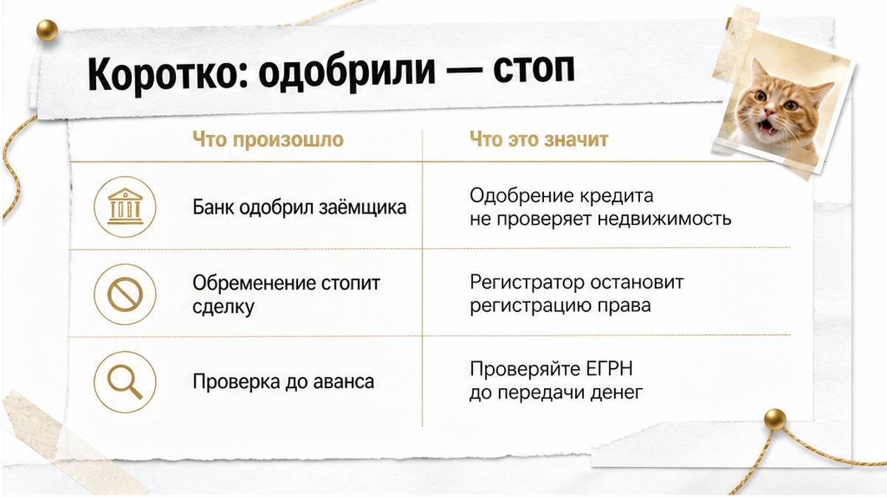
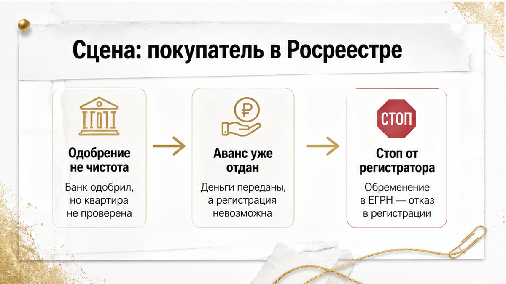
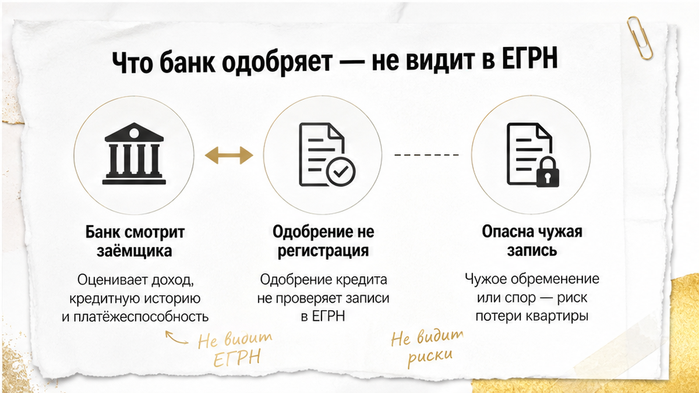
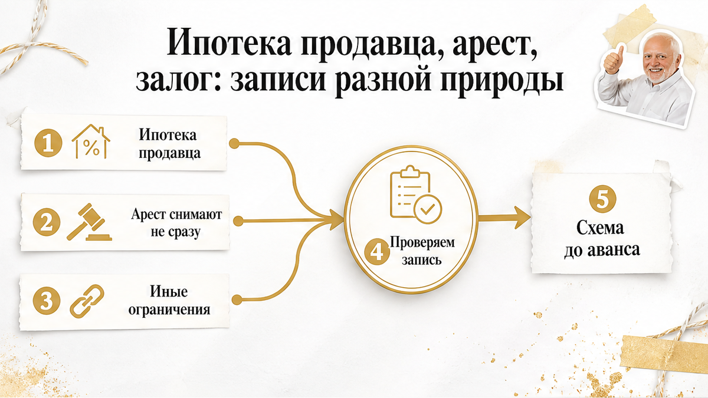
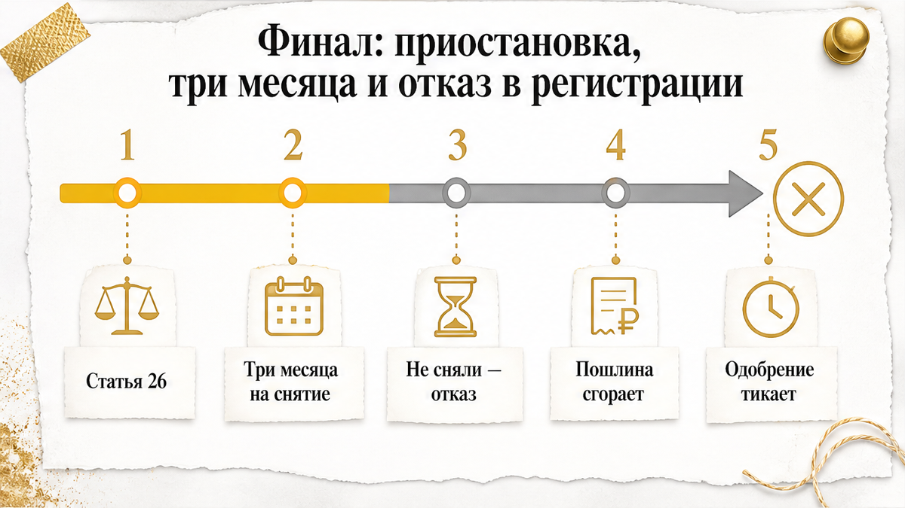
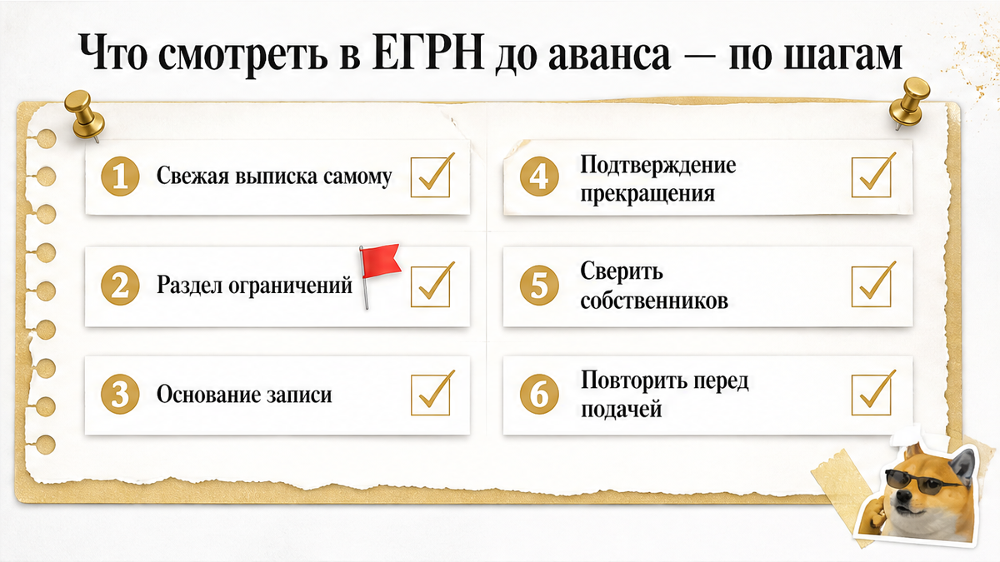

Ипотеку одобрили. Квартиру нашли. Аванс отдали, договор подписали, документы сдали в МФЦ. Дальше по плану была регистрация — а пришло уведомление о приостановке. В ЕГРН по объекту числится действующая запись об обременении.
Запись не появилась ночью. Она стояла в выписке ещё до аванса. Её просто не прочитали. Все смотрели в другую сторону: на одобрение банка, на ставку, на дату выхода на сделку.
Это не курьёз. Это типовая сцена. Разбираю её так, как она выглядит в тюменской практике: покупатель с одобренной ипотекой, продавец с «чистой квартирой» на словах и одна строка в выписке, которую никто не проверил до денег.
Быстрый инсайт. Одобрение ипотеки — про заёмщика, не про объект. Строка об обременении в ЕГРН может остановить регистрацию, даже если банк уже сказал «да».
Я — Святослав Шакин, The Риэлтор в Тюмени. Лично веду сделку от звонка до регистрации.
Полный разбор кейсов и как я это ловлю до аванса — в Telegram и MAX.

Если читать целиком некогда — вот суть.
Главный вывод статьи умещается в две фразы, которые я повторяю клиентам круглый год: сначала проверка, потом аванс. Не наоборот.

Покупатель искал квартиру не неделю. Месяцы просмотров, торга, отказов. И вот вариант сошёлся по всему: район, площадь, цена в рынке, продавец адекватный, готов выходить быстро.
Банк к тому моменту уже дал одобрение. В голове у покупателя это звучало так: «Меня одобрили, значит, всё в порядке, осталось выбрать объект». Логика понятная. Ровно здесь она и ломается.
Выписку из ЕГРН заказывали. Смотрели быстро: собственник тот же, что на встрече, доля не дробная, площадь совпадает. Раздел с ограничениями пролистали — текст там был, но его прочитали как формальность из прошлого. Продавец на вопрос ответил спокойно: «Это старое, уже закрыто, банк давно всё снял».
Устно — закрыто. В реестре — нет.
Дальше всё шло по обычному сценарию. Аванс. Документы в банк. Оценка. Страховка. Подписание договора купли-продажи. Подача на регистрацию через МФЦ. Ни на одном из этих этапов система не сказала «стоп». Банк работал со своей частью: заёмщик, кредит, будущий залог. Продавец работал со своей: вынести мебель и получить деньги.
«Стоп» сказал регистратор. Уведомление о приостановке пришло уже после того, как деньги были заведены в схему расчётов, а покупатель мысленно жил в новой квартире.
Похожая механика — когда доверяют словам вместо документа — разобрана в истории с распиской, за которой не оказалось денег на счёте. Формула одна: бумага есть, юридического результата нет.

Разберём, что означает то самое одобрение, после которого покупатель выдыхает.
Банк оценивает заёмщика: доход, стаж, кредитную нагрузку, первоначальный взнос, возраст, страховку. Заодно фиксирует параметры кредита: сумму, срок, ставку, тип программы. Это решение о человеке и о деньгах.
Объект на этом этапе — абстракция. «Квартира на вторичке в Тюмени до такой-то суммы». Ни адреса, ни выписки.
Когда объект появляется, банк смотрит на него под своим углом: оценка стоимости, ликвидность залога, соответствие требованиям программы. Ему важно, чтобы предмет залога стоил столько, сколько написано, и чтобы его можно было реализовать. На этом же стыке, кстати, живёт отдельный сорт проблем — когда автооценка занижает квартиру на пару миллионов относительно рынка.
Но проверка залога и проверка регистрационной чистоты — разные вещи. У банка свой чек-лист и своя цель: защитить кредит. У Росреестра своя: не пропустить переход права, если по объекту действуют ограничения.
Отсюда и разрыв, из которого вырастает казус. Одобрение банка и регистрационная судьба сделки живут в разных плоскостях. Можно держать на руках все банковские бумаги и всё равно получить приостановку.
И ещё деталь, которую путают почти все. После регистрации вашей ипотеки в ЕГРН появится запись об ипотеке в пользу банка-кредитора. Это норма, а не проблемная строка: так и должно быть, пока кредит не погашен. Опасна не любая запись об обременении, а чужая действующая — та, что пришла из прошлой жизни объекта и не была прекращена.
Выписку из ЕГРН заказывают почти все. Читают — единицы.
Глаз покупателя живёт на первом экране. Адрес. Площадь. Кадастровый номер. Фамилия собственника. Всё сошлось с тем, что говорил продавец, — и в голове щёлкает: квартира чистая, можно нести деньги.
А сделку решает другой раздел. Он называется скучно и длинно: актуальные ограничения прав и обременения объекта недвижимости. Там и живёт та самая запись, из-за которой регистратор нажимает на стоп.
В нашем казусе она стояла на месте до аванса. Никто не прочитал её вслух.
В этом разделе важна не формулировка, а четыре её элемента:
Последний пункт — то место, где сделки рвутся чаще всего.
Продавец говорит искренне: «Я всё выплатил три года назад». И он не врёт. Кредит закрыт, справка есть, в приложении банка ноль. Только погашение долга и погашение записи в ЕГРН — два разных события. Пока собственник не подал заявление, строка в реестре живёт своей отдельной жизнью. Регистратор смотрит в реестр, а не в телефон продавца.
Отдельно проговорю то, чего покупатели пугаются зря. После регистрации вашей сделки в ЕГРН появится запись об ипотеке — в пользу вашего банка. Это норма, а не проблемная строка. Так устроен любой кредит под залог недвижимости. Бояться надо чужой непогашенной записи до сделки, а не своей собственной после.
Проверка ЕГРН — это не «скачал файл и успокоился». Это прочитать нужный раздел до того, как деньги ушли из-под контроля. Та же логика, что в истории, где расписку на квартиру написали, а денег на счёте не оказалось: бумага была, смысла в ней — ноль.

Для покупателя все обременения на вид одинаковы: «что-то висит». На практике разница огромная. Она определяет, кто может это снять и за какой срок.
Ипотека продавца. Самый частый случай и самый управляемый. У записи есть конкретный кредитор — банк. Есть основание — кредитный договор. Есть понятный сценарий прекращения: долг закрывается, запись погашается.
Здесь покупателю нужно не устное «я всё выплатил», а два ответа. На каком основании возникла ипотека. Что уже сделано для прекращения записи — и что ещё не сделано. Если долг не погашен, сделка возможна, но по другой схеме, с участием банка-кредитора. И обсуждать эту схему надо до аванса, а не в день подачи документов.
Арест и запрет на регистрационные действия. Совсем другая природа. Запись появилась не по воле собственника и не по договору с ним. Её поставили извне — решением органа. Значит, и снять её продавец «сам, за пару дней» не может.
Сроки тут не в его руках. Он закроет долг, подаст документы — а дальше всё зависит от того, как быстро отработает инициатор ограничения. Поэтому арест в выписке — это не мелочь, которую «поправим к сделке». Это причина остановиться и пересобрать сроки заново.
Иные ограничения. В разделе бывают записи, не связанные с деньгами напрямую. Сделку они блокируют не всегда, но объяснения требуют всегда: кто поставил и что нужно, чтобы это прекратилось.
Принцип один и он простой: покупатель проверяет запись, а не человека. Обаяние продавца, его спокойствие и готовность «всё решить» — не аргументы для регистратора. Ровно как в кейсе, где скидку в два миллиона обещали, а в квартире прятали риск. Чем приятнее условия, тем внимательнее читаем документы.

Теперь то, ради чего эта история вообще стоит внимания.
Регистратор видит действующую запись об обременении. Он не звонит и не просит донести бумажку. Он выносит решение о приостановлении государственной регистрации — статья 26 Федерального закона № 218-ФЗ. Сделка не отменена. Но и не прошла. Она замерла.
Дальше включается срок. На устранение причин — три месяца. Много это или мало, зависит от того, что именно устранять. Погасить запись по закрытой ипотеке продавца — задача решаемая. Дождаться снятия ареста, который наложил сторонний орган, — задача, срок которой не контролирует ни продавец, ни покупатель. Никто.
Причина не устранена за три месяца — приостановка превращается в отказ в государственной регистрации. И тут два практических следствия.
Первое: уплаченная госпошлина при отказе не возвращается. Деньги за подачу просто сгорают.
Второе больнее. Рушится вся конструкция сделки. Одобрение ипотеки не вечное. Ставка и условия меняются. Продавец за эти месяцы передумает или найдёт другого покупателя. Аванс превращается в предмет отдельного спора. А покупатель возвращается в начало — потратив на квартиру не полгода поисков, а полгода поисков плюс сорванную регистрацию.
Два состояния надо различать чётко. Приостановка — это пауза с шансом: есть время и есть понятный список того, что сделать. Отказ — это конец процедуры по данному пакету: подавать заново, платить заново, собирать заново.
С 1 января 2026 года у сторон появился дополнительный инструмент — досудебное обжалование приостановки. Обращение в апелляционную комиссию, 15 рабочих дней. Штука полезная, когда покупатель считает решение регистратора необоснованным. Но обратите внимание на логику: механизм работает со спором о правомерности приостановки, а не с ситуацией, где обременение реально есть и реально не погашено. Строка в реестре живая — обжаловать нечего.
Мораль казуса неудобная и короткая. Банк одобрил заёмщика. Стороны сошлись в цене. Деньги были готовы. Всё это остановила одна непрочитанная строка. Проверку объекта не сделали вовремя — и экономия обошлась дороже, чем стоила бы выписка.

Порядок здесь важнее скорости. Одобрение на руках, продавец торопит, риэлтор со стороны продавца говорит «да там всё чисто, не тяните». И соблазн отдать аванс сегодня, а бумаги посмотреть в понедельник — огромный.
Именно на этом шаге сделка либо становится регистрируемой, либо превращается в три месяца ожидания.
И держите в голове различие, на котором путаются даже опытные покупатели.
Приостановка — статья 26 закона 218-ФЗ. Это пауза со сроком на устранение до трёх месяцев. Дверь ещё открыта. Отказ — итог, когда причину не устранили. Госпошлина при нём не возвращается.
С 1 января 2026 года появился ещё инструмент: досудебное обжалование приостановки, обращение в апелляционную комиссию в течение пятнадцати рабочих дней. Полезная штука. Но это лечение, а не профилактика — вы уже в сделке, уже с деньгами в чужих руках и с одобрением, которое тикает.
Самая скучная строка в этой статье остаётся самой дорогой: сначала проверка, потом аванс.
Слева — то, что покупатель искренне считает закрытым вопросом. Справа — что смотрю я.
| Что покупатель считает проверенным | Что на самом деле смотрим в выписке | Цена пропуска |
|---|---|---|
| «Банк одобрил ипотеку» | Одобрение подтверждает заёмщика и параметры кредита; статус объекта в ЕГРН смотрим отдельно | Регистрация встаёт уже после подписания договора |
| «Выписка чистая, продавец показывал» | Дату формирования документа и кто его заказывал | Устаревший файл вместо актуального состояния реестра |
| «Обременений нет» | Раздел актуальных ограничений: ипотека, арест — построчно | Приостановка по статье 26 и три месяца ожидания |
| «Старую ипотеку они давно закрыли» | Основание записи и документ о её прекращении | Запись жива, пока её не погасили; аванс уже отдан |
| «Ипотека в выписке — всегда плохо» | После регистрации вашей сделки запись в пользу банка — норма, а не дефект | Отказ от нормального объекта из-за неверного чтения выписки |
| «Проверили один раз — хватит» | Две точки: до аванса и перед подачей документов | Новая запись появляется в промежутке и остаётся незамеченной |
| «Если что — быстро исправим» | Срок на устранение — до трёх месяцев; при неустранении отказ | Госпошлина не возвращается, сроки одобрения уходят |
Обратите внимание на пятую строку. Она про обратную ошибку: человек видит слово «ипотека» и бежит от хорошей квартиры. Запись в пользу банка после регистрации вашего кредита — это нормальный ход, а не пятно. Читать выписку нужно не по словам, а по датам и основаниям.
Эти вопросы задаются до аванса и в переписке. Не голосом в мессенджере, не «на словах у подъезда». Ответ «да, конечно» без документа ответом не является.
Продавцу:
Банку:
Последний вопрос выглядит бытовым, а спасает недели. Когда приходит уведомление о приостановке, вам нужен живой человек с именем и телефоном, а не горячая линия и робот с музыкой.
И ограничение, которое честно проговариваю в Тюмени каждому покупателю: полностью исключить приостановку не может ни риэлтор, ни банк. Реестр живой, записи появляются, аресты приходят из мест, где никто не спрашивает наш график.
Управляемым делается другое. Момент, в который вы узнаёте о проблеме. До аванса это спокойный разговор о документах и лишняя выписка за триста рублей. После подписания — три месяца, невозвратная пошлина, просроченное одобрение и сделка, собранная заново.